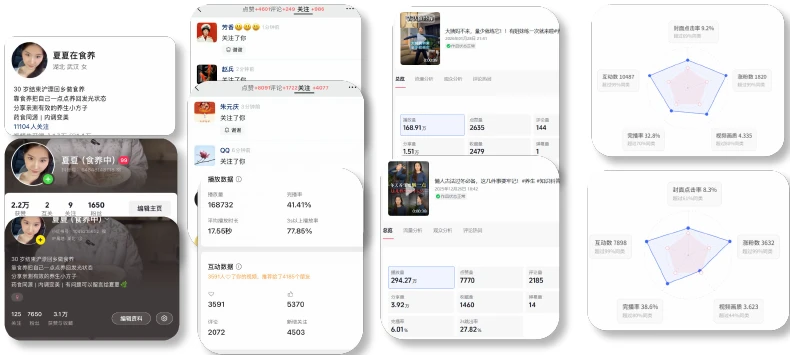

食养教程
围绕简单、可操作的食养主题制作教程类内容，降低理解门槛，提高收藏和转发价值。
05 / 个人内容账号
自己从 0 起号，用食养教程等内容持续验证选题、表达、增长和真实用户需求。
01 / 项目是什么
相比替品牌做内容，这个项目没有现成流量和团队资源，需要从零判断什么主题值得做、什么表达更容易被理解和收藏，以及什么内容真正能够带来关注和咨询。食养教程是其中反馈最稳定的一类内容。
02 / 怎么做
围绕简单、可操作的食养主题制作教程类内容，降低理解门槛，提高收藏和转发价值。
根据播放、收藏、关注和私信反馈判断哪些主题值得继续做，而不是只凭主观判断。
持续调整标题、开头、内容结构和镜头呈现，让专业信息更接近日常使用场景。
从评论、私信和咨询中继续观察用户真正关心的问题，把反馈重新带回下一轮内容。
围绕小红书等主要平台持续发布，并根据不同平台反馈调整内容节奏和表达方式。
通过真实咨询继续判断用户对食养、养生产品和后续服务的需求，为产品方向提供依据。
03 / 项目结果
后续全网粉丝约 3 万，小红书 8,000+。这个账号也继续作为我验证内容方向、用户需求和产品想法的真实场景。
04 / 代表内容
